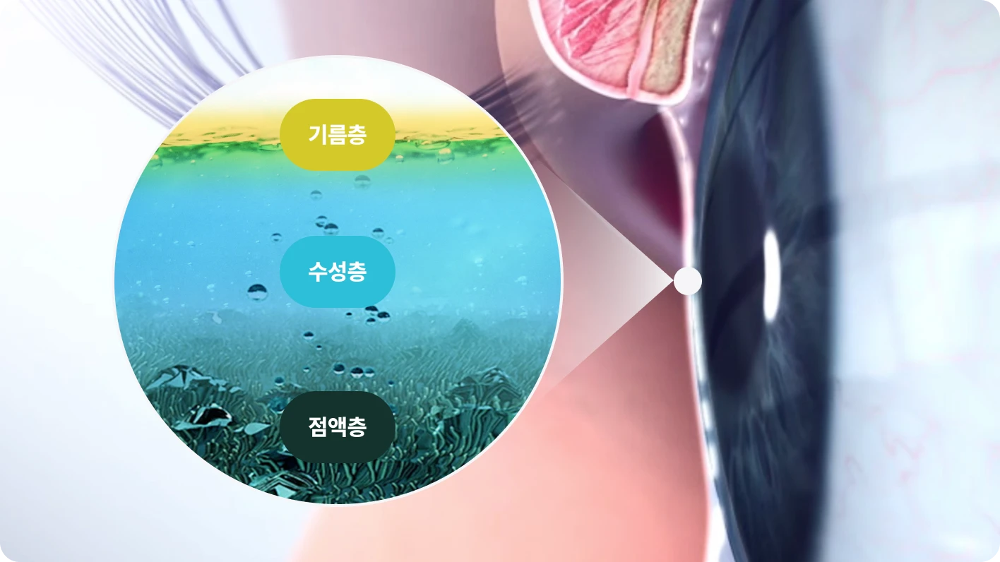
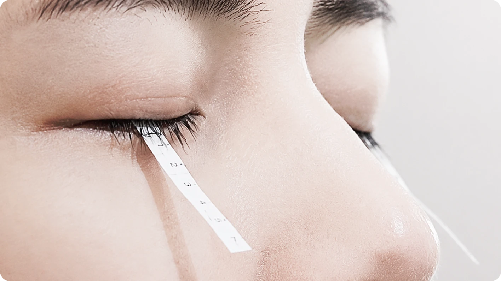
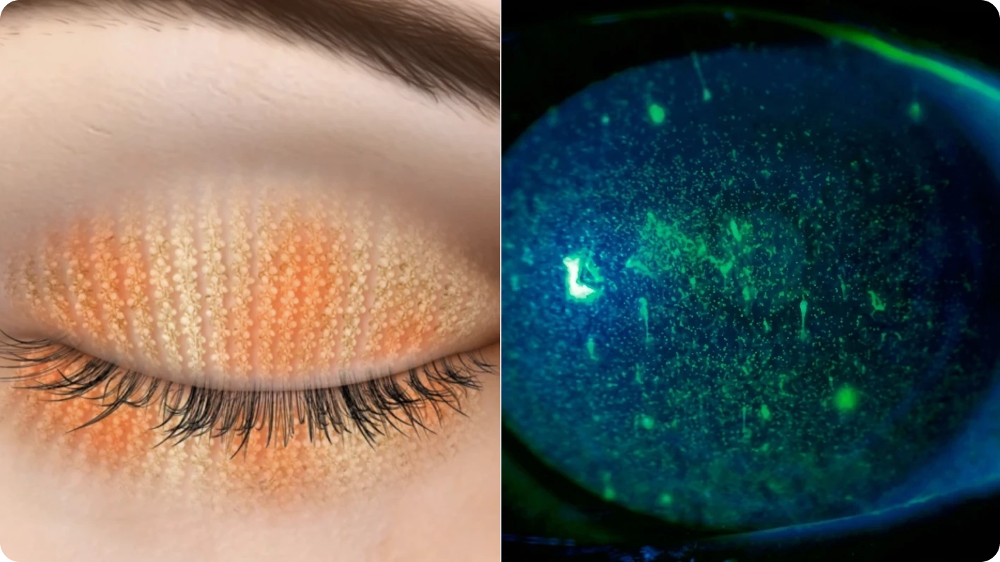
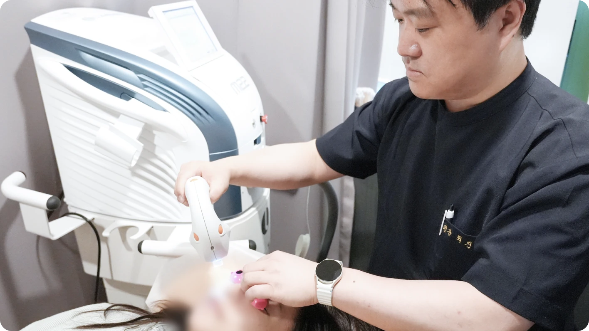
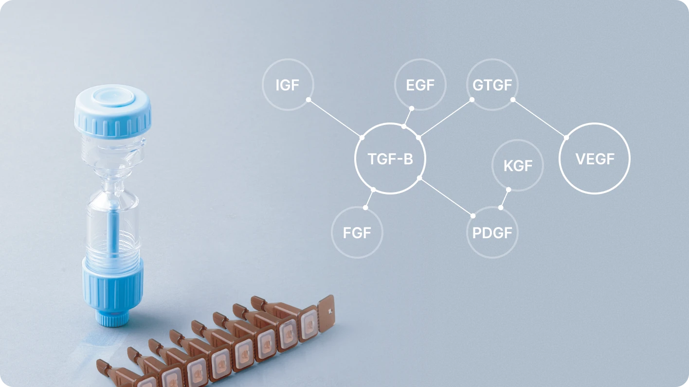
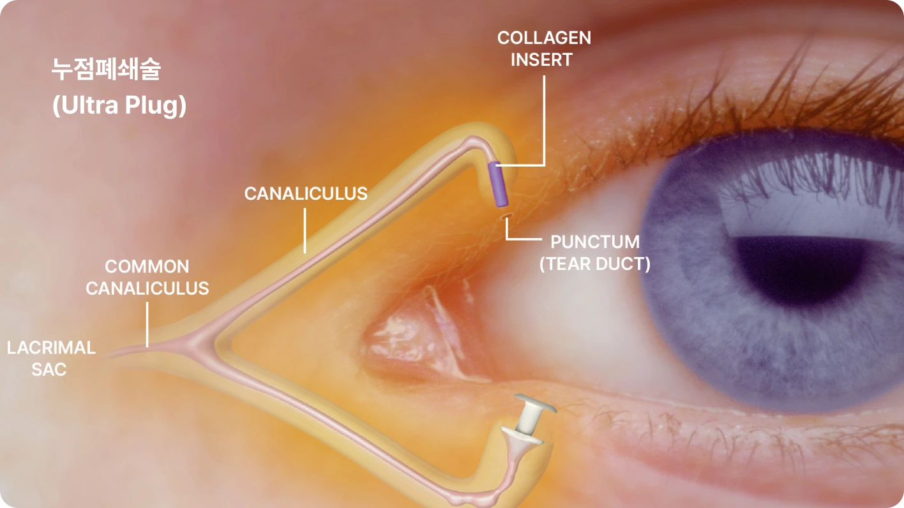
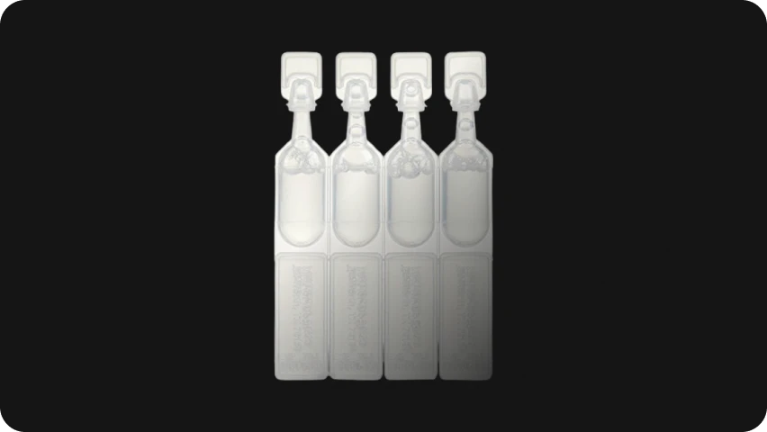
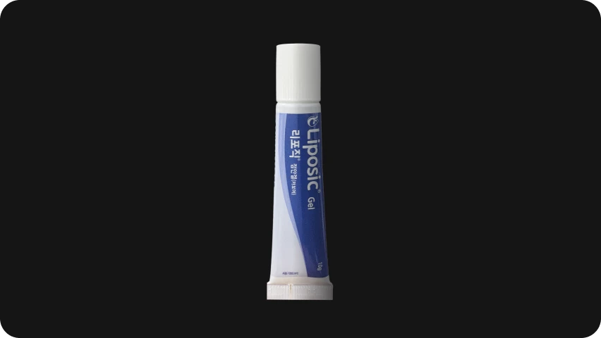
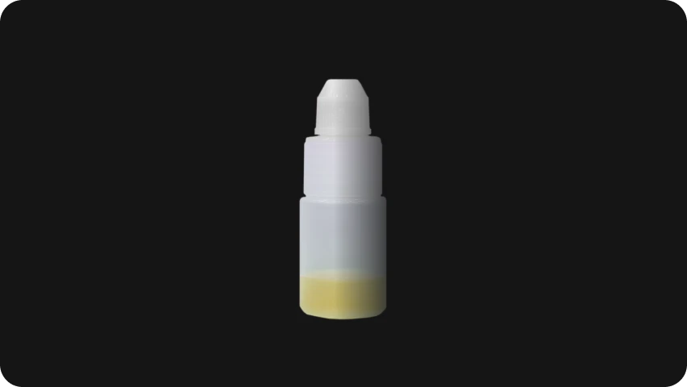

안구건조증(Dry Eye Syndrome)은 눈물이 부족하거나, 눈물이 지나치게 빨리 증발하거나, 눈물막 구성 성분의 균형이 깨져 눈
표면이 불안정해지면서 발생하는 질환입니다.
눈물막(Tear Film)은 단순한 물이 아니라 기름층(Lipid Layer), 수성층(Aqueous Layer), 점액층(Mucin Layer)으로
구성되며, 이 균형이 무너지면 눈 시림, 이물감, 뻑뻑함, 눈물흘림 같은 증상이 나타날 수 있습니다.
아이리움 안구건조증 치료
-
눈물막·마이봄샘
정밀 진단 -
FDA·CE 인증
IPL 치료 -
고농축 PRP와
누점폐쇄술 -
원인별
맞춤 치료
눈물막 균형이 무너지면
안구건조증이 시작됩니다.
-
눈물층(Tear Film)의 구성 성분
- 기름층 (Lipid Layer)
- 마이봄샘에서 분비되며, 눈물의 증발을 막아줍니다.
- 수성층 (Aqueous Layer)
- 눈물샘에서 분비되며, 눈 표면을 적시고 이물질을 씻어냅니다.
- 점액층 (Mucin Layer)
- 눈물막이 눈 표면에 고르게 퍼지고 잘 유지되도록 돕습니다.

-
안구 건조증 증상
- 화끈거리거나, 찌르는 듯한 느낌
- 눈에 모래가 들어간 듯한 이물감
- 시리고 뻑뻑함
- 눈 주위나 눈 속에 실 같은 눈곱이 보임
- 연기나 바람에 예민함
- 오히려 눈물이 자주 흐름
안구건조증은 인공눈물만으로 해결할 수 없습니다. 눈물 분비량, 눈물막 파괴 시간, 마이봄샘 상태, 동반 염증 여부 등을 종합적으로 확인해 원인에 맞는 치료 방향을 정하는 것이 중요합니다.

안구 건조증의
또 다른 원인
-
노화
나이가 들어감에 따라 자연적으로 중년층부터 안구건조증이 잘 생기며, 특히 폐경기 여성은 호르몬 부족으로 눈물샘 분비 기능이 약화되어 안구건조증이 심해집니다. -
관절염
관절염이나 자가면역질환이 있는 경우 입 마름과 함께 안구건조증이 동반될 수 있습니다. -
라식·라섹 수술 후
수술 후 각막신경이 일부 절단되어, 회복 기간 동안 일시적인 안구건조증이 발생할 수 있습니다. 따라서 라식이나 라섹수술 전에는 반드시 눈물막 파괴시간 측정 검사(TBUT), 눈물 분비량 검사(Schirmer)를 통해 안구의 수분 상태를 정확하게 파악하여 수술을 진행해야 하며, 수술 후 증세가 심하거나 장시간 지속되면 이에 맞는 진단을 받을 필요가 있습니다. -
약물·환경 요인
눈물 자체에는 이상이 없어도 각막 표면에 이상이 있거나, 눈꺼풀의 염증, 콘택트렌즈의 장기간 착용, 특정한 약물 복용, 비타민A 결핍증에 의해 안구건조증이 나타납니다.
안구건조증 치료 방법
-

IPL 레이저 치료 (MGD 치료)
만성 안구건조증 환자의 85%는 마이봄샘 기능장애(MGD)가 원인마이봄샘 기능장애(MGD)는 눈꺼풀 속 마이봄샘의 기름 분비가 원활하지 않아 눈물의 증발이 빨라지고 눈물막이 불안정해지는 상태입니다. 이로 인해 안구건조증, 눈꺼풀 염증 등 반복되는 불편감이 나타날 수 있습니다.
-

IPL 레이저로 마이봄샘 기능을 집중 치료
IPL(Intense Pulsed Light) 레이저는 마이봄샘 주변 조직에 열에너지를 전달해 굳어 있는 기름 배출을 돕고, 눈꺼풀 염증 완화와 눈물막 안정에 도움을 줍니다. 특히 만성 안구건조증이나 반복되는 눈꺼풀염 환자에게 매우 효과적인 치료 옵션입니다.
안구건조증이 심하다면 필수!집에서 온찜질과 눈꺼풀 세정이 힘들고 귀찮거나, 안검염에 자주 걸리고, 마이봄샘 기능 장애의 근본적인 치료를 원한다면 쉽고 빠른 IPL 레이저 치료를 병행하는 것이 효과적입니다.
아이리움안과에서는 유럽 CE, 미국 FDA, 인증을 받은 IPL 레이저로 안전하게 안구건조증 전문 치료를 진행하고 있습니다. -


고농축 PRP 안약 치료
고농축 PRP란?자가 혈소판 풍부 혈장(Platelet Rich Plasma, PRP)은 본인의 혈액에서 혈소판과 성장인자 성분을 농축해 사용하는 치료입니다. 손상된 안구 표면 회복을 돕고, 재생을 촉진하는 데 활용됩니다.
* 성장인자: 혈소판에 다량 함유되어 세포의 분화와 생존을 돕는 단백질 고농축 PRP 안약 치료의 장점- 안구 표면 상처 회복에 도움
- 건조증으로 손상된 표면 재생 촉진
- 수술 후 회복 및 통증 완화에 도움
- 국제 수준의 감마 멸균 시스템과 포장으로 안정성 강화
- PRP 안약의 상피재생인자가 상처 치유 반응을 강력하게 촉진함으로써 각막 상피 회복이 빨라집니다.
- 항염증 작용으로 수술 후 통증 경감
- 각막 상피의 재생 촉진을 돕습니다.
-

누점폐쇄술 (눈물 보존시술)
안구건조증 완화를 위한 누점폐쇄술은 눈물이 내려가는 길을 콜라겐 덩어리인 울트라 플러그(Ultra Plug)가 막아주어 눈물이 촉촉하게 머물도록 하여 안구건조증을 개선해주는 시술입니다.
이 시술을 통해 시력교정수술 후 일시적으로 발생하는 건조증 및 콘텍트렌즈, 계절적 알러지 등으로 인한 건조증에 매우 효과적으로 작용하여 안구건조증을 완화시켜 줍니다.
보충 치료
-
인공눈물

부족한 눈물을 보충하기 위해 수시로 점안하며 건조한 눈 표면을 보호합니다. -
눈물 연고제

아침에 눈 뜰 때 증상이 심한 경우, 취침 전 사용해 야간 건조를 완화하는 데 도움을 줍니다. -
자가혈청 안약

자신의 혈액으로 만든 안약으로, 안구 표면 보호와 회복을 도와 중증 건조증 치료에 활용됩니다.
안구건조증 FAQ
안구건조증 진단과 치료 전, 많이 궁금해하시는 내용을 정리했습니다.
-
Q
안구건조증에 인공눈물만 계속 넣어도 괜찮나요?
-
Q
눈물이 많이 나도 안구건조증일 수 있나요?
-
Q
IPL 치료는 안구건조증에 어떻게 도움이 되나요?
-
Q
시력교정수술 후 안구건조증은 왜 생기나요?
-
Q
누점폐쇄술(플러그)후 바로 일상생활이 가능한가요?